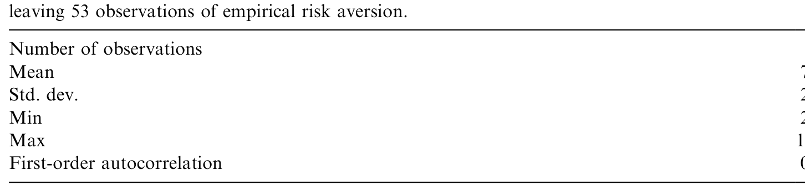
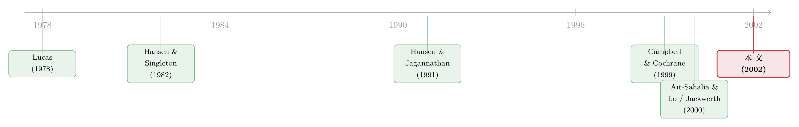

从一张期权报价单里，读出投资者今天有多怕
本文读的是 Rosenberg & Engle (2002, Journal of Financial Economics)：他们用 S&P 500 指数期权价格，配上一个随机波动率模型给出的「明天会怎样」的概率，按月反解出一条会随时间移动的定价核（pricing kernel），并发现它刻画的投资者风险厌恶是逆周期的——经济越像要衰退（信用利差走阔），投资者越怕；越像要扩张（利率曲线变陡），投资者越敢。
1 一个被「平均」抹掉的问题
先讲清楚定价核（pricing kernel，又称随机贴现因子 stochastic discount factor）到底是什么。在无套利的世界里，任何资产今天的价格，都等于「定价核 × 未来支付」的期望：
$$P_t = E_t[M_t\, X_{t+1}]$$
这条式子（论文的 Eq. 1）几乎是现代资产定价的全部。它把两件事缝在一起：一头是概率——未来各种状态发生的可能性；另一头是偏好——投资者对每一种状态下「一块钱」的珍惜程度。定价核 \(M_t\) 就是后者：它在「坏状态」里取大值（那时的一块钱最金贵），在「好状态」里取小值。它的斜率，正是我们常说的风险厌恶。
于是一个很自然的念头是：能不能把这条「投资者的心电图」直接画出来？
传统的做法，是顺着 Lucas (1978) 的消费资本资产定价模型往下走：定价核等于跨期边际替代率，在幂效用 (power utility) 假设下 \(M_t = e^{-\rho}(C_{t+1}/C_t)^{-\gamma}\)。Hansen & Singleton (1982, 1983) 就是这么干的——把总消费增长率当成状态变量，用 GMM 去估那个常数风险厌恶 \(\gamma\)。
但这条路有个尽人皆知的硬伤：总消费数据测不准。Ermini (1989)、Wilcox (1992)、Slesnick (1998) 都翻过这本账——编码错误、定义口径、季节调整、时间加总……每一道工序都往里掺沙子。定价核的分母（每单位概率的状态价格）一旦测错，整条核就跟着歪。
接着，一个聪明的绕道出现了。Aït-Sahalia & Lo (2000) 和 Jackwerth (2000) 说：别用消费了，用期权。期权价格里本来就藏着市场对未来的定价；再配上一段历史收益的直方图当概率，两者一除，就能非参数地把定价核（或「风险厌恶函数」）投影到股指收益状态上反解出来。这一步漂亮，绕开了消费数据，也绕开了对效用函数的硬性设定。
「投影」(projection) 是这里的关键魔法。原始定价核依赖一大堆说不清的状态变量 \(Z_{t+1}\)；但 Cochrane (2001) 指出，只要我们关心的资产支付只依赖股指收益 \(r_{t+1}\)，就可以把定价核投影到收益这一个维度上，得到一元函数 \(M^*_t(r_{t+1})\)，它对这类资产有着和原始核完全一样的定价含义。
可是——这正是本文的张力所在——他们的核是「平均」出来的。Aït-Sahalia & Lo 和 Jackwerth 都用过去约四年的实现收益去平滑出概率，并把状态价格与概率在样本期里平均。这意味着两件尴尬事：
其一，概率信念被设成「过去四年等权、之前全忘」。于是 1987 年 10 月的股灾，会一直影响信念到 1991 年 10 月，然后在 1991 年 11 月一夜之间彻底消失。可随机波动率文献（如 Bollerslev et al., 1992）早就告诉我们，近的事更重要、远的事衰减但不归零——这个矩形窗口与证据相悖。
其二，也是更要命的：既然在时间上做了平均，他们估出来的，至多是样本期里那条「平均定价核」。年度以下的时间变化，他们看不见。可定价核如果真像习惯形成 (habit formation) 模型——Abel (1990)、Constantinides (1990)、Campbell & Cochrane (1999)——所预言的那样会随商业周期呼吸，那么一条静止的平均核，既画不出这种呼吸，也没法在任意一天给资产正确定价与对冲。
这正是本文要补的那一刀：把定价核从「一张长曝光的合影」，变成「一段每月一帧的录像」。
2 识别策略：让期权价格自己「说」出今天的核
Rosenberg 与 Engle 的做法，可以拆成三步，每一步都对准上面那个「平均」的软肋。
第一步，把定价核写成对期权价格的「最佳拟合」。 对一只支付为 \(g_i(r_{t+1})\) 的衍生品，价格是定价核、支付、概率三者的积分（Eq. 6）：
在某一天，市场上挂着 \(L\) 个期权价格。把定价核设成一个含参数 \(\theta_t\) 的函数，当天就去求一组参数，让模型价格与市场价格的平方误差最小——这就是「实证定价核」(empirical pricing kernel, EPK) 的定义（Eq. 8）：
$$\min_{\theta_t}\; \sum_{i=1}^{L}\, \big[P_{i,t} - \hat P_{i,t}(\theta_t)\big]^2$$
注意这个 \(t\) 下标：EPK 是某一天那条核的估计，而不是一年甚至更长时间里的平均。这就是它能「逐月录像」的根本原因。
第二步，给定价核挑两种形状。 一种是幂函数（Eq. 10）：
$$M^*_t(r_{t+1}, \theta) = \theta_{0,t}\, (r_{t+1})^{-\theta_{1,t}}$$
这里 \(\theta_{0,t}\) 是个标度，\(\theta_{1,t}\) 决定斜率。妙处在于，这个设定下投影风险厌恶恰好就等于那个斜率参数：\(\gamma^*_t = \theta_{1,t}\)。\(\theta_{1,t}\) 只要随时间动，风险厌恶就随时间动。它对应的一般定义（Eq. 5）是把 Arrow–Pratt 相对风险厌恶搬到投影核上：
$$\gamma^*_t = -\,\frac{r_{t+1}\, M^{*\prime}_t(r_{t+1})}{M^*_t(r_{t+1})}$$
另一种更灵活，用正交多项式（广义 Chebyshev 展开）的指数形式（Eq. 12）来逼近任意形状的核，同时保证核恒为正。两种设定互为参照：幂函数省俭，多项式灵活。
第三步——也是真正把这篇与前人拉开的一步——概率不再回望，而是前瞻。 他们不用历史直方图，而是给 S&P 500 收益过程上一个非对称 GARCH 模型，捕捉股指收益的三个老毛病：波动率随机且均值回复、对正负收益反应不对称（杠杆效应）、新息非正态。模型是（Eq. 13–14）：
$$\ln(S_t/S_{t-1}) - rf = \mu + \varepsilon_t, \qquad \varepsilon_t \sim f(0, \sigma^2_{t|t-1})$$
$$\sigma^2_{t|t-1} = \omega_1 + \omega_2 I_t + \alpha\, \varepsilon^2_{t-1} + \beta\, \sigma^2_{t-1|t-2} + \delta\, \mathrm{Max}[0, -\varepsilon_{t-1}]^2$$
那一项 \(\delta\,\mathrm{Max}[0,-\varepsilon_{t-1}]^2\) 就是 Glosten et al. (1993) 式的非对称：负的收益冲击会比正的同样大小的冲击，推高更多的明日波动率。新息则从一个经验新息密度里抽取（保留偏度、峰度等非正态特征），再用蒙特卡洛模拟出任意期限的未来收益密度 \(\hat f_t\)。
把这条前瞻密度喂进 Eq. 8，每个月都解一次——一条会动的定价核就这样被「录」了下来。它的对冲含义也顺理成章：用泰勒展开把期权价格对标的价格的一阶、二阶敏感度（delta 与 gamma）用有限差分算出来（Eq. 15–16），再用 EPK 给下一期的期权重新定价，就得到了一组随核而变的对冲比率。
（关于「定价核如何随状态而非随时间变形」，可对照《定价核的两副面孔：为什么同样跌 10%，在「平静市」里更让人心痛？》；而把 GARCH 这件事反过来从偏好里「长」出来，则见《GARCH 从哪儿来？》。）
3 数据与主要结果
数据：S&P 500 指数期权，逐月估计，样本期 1991–1995 年。标的收益过程的 GARCH 用最大似然估计（在正态新息下做 QMLE，按 Bollerslev & Wooldridge (1992) 仍是一致的）。
核心发现，正是那条会呼吸的核：
-
逆周期的风险厌恶。投资者并非恒定地厌恶风险。EPK 反解出的实证风险厌恶，与衰退指标正相关（信用利差走阔时，风险厌恶上升），与扩张指标负相关（利率期限结构变陡时，风险厌恶下降）。换句话说，市场越像要进入坏天气，投资者对「跌的那一头」的厌恶就越深——这与 Campbell & Cochrane (1999)、Campbell (1996) 习惯模型里「消费贴近习惯时风险厌恶飙升」的直觉高度吻合，而这恰恰是恒定风险厌恶的幂效用所无法产生的。
-
对冲表现显著改善。在他们设计的对冲测试里——用平价看跌期权和 S&P 500 指数组合去对冲虚值看跌期权——基于时变定价核构造的对冲比率，比基于时不变定价核的对冲比率，更能压低对冲组合的波动。也就是说，这条「会动的核」不只是好看，它真的把套保做得更稳。
下表是论文对实证风险厌恶的描述性统计，给出了样本期内这条风险厌恶序列的水平与波动：

Table 6: provides summary statistics for empirical risk aversion. Over the sample
这里有一处常被误读：本文的「逆周期」说的是风险厌恶这一偏好量，而不是单纯的风险溢价高低。前人能看到溢价随周期变，但说不清究竟是「概率（数量）」变了还是「偏好（价格）」变了。本文把概率交给 GARCH 单独建模，剩下来的那部分时间变化，才被归给偏好——这是它能对「风险厌恶逆周期」下断言的前提。
4 文献脉络
把这条线捋直，故事其实很清楚。
最早，Lucas (1978) 立起了消费基础的资产定价框架，定价核就是边际替代率。沿着它，Hansen & Singleton (1982, 1983) 用总消费 + 幂效用 + GMM 把风险厌恶估成一个常数；Hansen & Jagannathan (1991) 则从市场数据反推出定价核均值与标准差的边界（这条「测谎」思路，可参见《定价核的「测谎仪」，为什么要请进期权？》）。但消费数据的测量误差，让这一支始终隔着一层毛玻璃。

与此同时，另一支偏好理论在生长：Abel (1990)、Constantinides (1990) 把习惯写进效用，Campbell & Cochrane (1999)、Campbell (1996) 则明确推出时变的相对风险厌恶——这给「核会随周期呼吸」提供了理论母体。
转机来自期权。Aït-Sahalia & Lo (2000) 和 Jackwerth (2000) 用期权价格 + 历史收益，非参数地反解出投影到股指收益上的定价核与风险厌恶函数，绕开了消费数据。可它们都在时间上做了平均，只能给出一条静止的平均核（Jackwerth 这条路反解出的风险厌恶为何会「咧嘴一笑」，见《为什么从期权里「读」出来的风险厌恶，会咧嘴一笑？》）。
Rosenberg & Engle (2002) 站的就是这个位置：保留「用期权反解投影核」的思路，但把回望的直方图换成 Engle (1982)→Bollerslev (1986)→Glosten et al. (1993) 这一脉发展出来的前瞻 GARCH 密度，于是第一次把定价核从「平均」中解放出来，看见了它的逐月时间结构。
5 评论与延伸（Q&A + 研究方向）
(a) 几个可能的疑问
Q：这条「投影核」和真正的定价核是一回事吗？
不必相等，但对「支付只依赖股指收益」的资产，二者定价含义完全一致（Cochrane, 2001）。代价是：一旦你想给依赖其他状态变量的资产定价，投影核就不够了。本文的所有结论，都应当理解为「在股指收益这一维度上」成立。
Q：所谓「逆周期风险厌恶」，会不会其实是 GARCH 概率模型设定错了，把概率的变化误记成了偏好的变化？
这是最该担心的地方。本文把时间变化拆成「概率（GARCH）」与「偏好（EPK 斜率）」两块，但这条拆分依赖 GARCH 对真实物理概率的刻画是否准确。如果 GARCH 系统性地低估了尾部或漏掉了跳跃，那么本该归给概率的部分就会被错记到风险厌恶头上。结论的稳健性，系于这条密度建模。
Q：和 Aït-Sahalia–Lo、Jackwerth 的最大区别，一句话是什么？
他们估的是「样本期内的平均核」，本文估的是「每一天的核」。差别全在概率：回望的等权直方图 vs. 前瞻的 GARCH 预测密度。
Q：为什么要同时用幂函数和正交多项式两种设定？
幂函数省俭、且风险厌恶就等于一个斜率参数，解释直观；正交多项式（Chebyshev）灵活、能逼近任意形状的核，用来检验幂设定是否过度受限。两者互为稳健性检验。
Q：1991–1995、只有五年、且只用 S&P 500，结论能外推吗？
谨慎。样本短、单一指数、且不含 1987 或 2008 这类极端期。逆周期的方向性结论也许稳健，但水平与幅度未必能搬到其他市场或危机期。
Q：它对实务到底有什么用？
一条会动的核，意味着 delta/gamma 对冲比率也会随市场状态而变。本文的对冲测试显示，用时变核做出的对冲组合波动更小——这是把「定价核估计」直接变现成风险管理收益的一个干净例子。
(b) 几个可能的研究问题与提案
1. 把 EPK 思路搬进公司债 / 信用市场。 - 【经济故事】股指期权反解出的是「股权收益状态」上的偏好。但信用市场的核心状态是「违约 / 复苏」，且公司债持有人的风险厌恶在危机里很可能更剧烈地逆周期。若能用 CDS 或信用指数期权反解出投影到「信用损失状态」上的定价核，就能直接观察信用市场投资者的风险厌恶如何随周期呼吸。 - 【可行性】中。需要流动的信用衍生品价格 + 一个违约/损失的前瞻概率模型（GARCH 思路可换成信用强度模型）。难点在于信用衍生品的非线性支付与流动性，2008、2020 两段样本是天然的实验窗口。
2. 外资持有人会不会有「不一样的核」？ - 【经济故事】本文假设了一个代表性投资者。但若市场被本土与外资两类投资者分割，他们对同一收益状态的风险厌恶可能不同，且外资在危机里更容易「逃」。能否在持有人结构变化的事件（如纳入/剔除某指数、资本账户开放）前后，比较反解出的核的移动？ - 【可行性】中偏低。期权反解给的是市场总量的核，难以直接拆到持有人层面；需要借助持有人结构的外生变动 + 跨市场期权数据做间接识别。（与外资行为相关的讨论，可对照《外资真是「蝗虫」吗？》。）
3. 用更高频、含跳跃的密度替换 GARCH，重估「逆周期」是否还在。 - 【经济故事】本文 1991–1995 样本里几乎没有大跳跃。若把概率模型升级为含跳跃的随机波动率（捕捉尾部），逆周期风险厌恶的幅度会被「吃掉」多少？这直接回应了上面那条最大的识别担忧。 - 【可行性】高。期权数据与含跳模型都已成熟，是一个干净、可立即做的稳健性复刻。
4. 把「核的逆周期」与流动性周期挂钩。 - 【经济故事】信用利差走阔时风险厌恶上升——但信用利差本身又含流动性成分。究竟是「怕风险」还是「怕卖不掉」在推动核的移动？若能把流动性指标作为第三块单独建模，或可把偏好里的「风险厌恶」与「流动性厌恶」分开。 - 【可行性】中。需要同时期的流动性度量与期权数据；识别上要小心二者的共线性。
6 我的判断
这篇论文真正的贡献，不在于又估了一条定价核，而在于把时间维度还给了它。在它之前，期权反解的核要么是平均的、静止的，要么概率用的是一扇会「一夜失忆」的矩形窗口。Rosenberg 与 Engle 的洞见简单而有力：定价 = 概率 × 偏好，那就把概率交给一个会前瞻、会呼吸的 GARCH 去单独刻画，剩下的时间变化，才干净地归给偏好。于是「风险厌恶逆周期」这件原本只能在习惯模型里假设的事，第一次被从市场价格里测了出来。
对识别，我最大的保留也正在这条拆分上：所有「偏好逆周期」的结论，都把宝押在「GARCH 把物理概率刻画对了」这个前提上。样本里若有被漏掉的跳跃或尾部，本该算给概率的部分就会被错记成风险厌恶——而 1991–1995 这段相对平静、又只有五年的样本，恰恰不是检验尾部的好场子。
后续我最想看到的，是把这套「概率与偏好分而治之」的框架，搬到含跳跃的高频密度上重做一遍（看逆周期还剩多少），以及搬到信用市场上去——毕竟「坏状态里的一块钱最金贵」这件事，在违约的世界里只会比在股权的世界里更尖锐。
参考文献
Abel, A. (1990). Asset prices under habit formation and catching up with the Joneses. American Economic Review 80, 38–42.
Aït-Sahalia, Y., & Lo, A. W. (2000). Nonparametric risk management and implied risk aversion. Journal of Econometrics 94, 9–51.
Bollerslev, T. (1986). Generalized autoregressive conditional heteroskedasticity. Journal of Econometrics 31, 307–327.
Bollerslev, T., & Wooldridge, J. M. (1992). Quasi-maximum likelihood estimation and inference in dynamic models with time varying covariances. Econometric Reviews 11, 143–172.
Bollerslev, T., Chou, R. Y., & Kroner, K. F. (1992). ARCH modeling in finance: a review of the theory and empirical evidence. Journal of Econometrics 52, 5–59.
Campbell, J. (1996). Consumption and the stock market: interpreting international experience. Swedish Economic Policy Review 3, 251–299.
Campbell, J., & Cochrane, J. (1999). By force of habit: a consumption-based explanation of aggregate stock market behavior. Journal of Political Economy 107, 205–251.
Cochrane, J. H. (2001). Asset Pricing. Princeton University Press, Princeton, NJ.
Constantinides, G. M. (1990). Habit formation: a resolution of the equity premium puzzle. Journal of Political Economy 98, 519–543.
Engle, R. F. (1982). Autoregressive conditional heteroscedasticity with estimates of the variance of United Kingdom inflation. Econometrica 50, 987–1007.
Glosten, L. R., Jagannathan, R., & Runkle, D. E. (1993). On the relation between the expected value and the volatility of the nominal excess return on stocks. Journal of Finance 48, 1779–1801.
Hansen, L. P., & Jagannathan, R. (1991). Implications of security market data for models of dynamic economies. Journal of Political Economy 99, 225–262.
Hansen, L. P., & Singleton, K. J. (1982). Generalized instrumental variables estimation of nonlinear rational expectations models. Econometrica 50, 1269–1286.
Hansen, L. P., & Singleton, K. J. (1983). Stochastic consumption, risk aversion, and the temporal behavior of asset returns. Journal of Political Economy 91, 249–265.
Jackwerth, J. (2000). Recovering risk aversion from option prices and realized returns. Review of Financial Studies 13, 433–451.
Lucas, R. (1978). Asset prices in an exchange economy. Econometrica 46, 1429–1445.
Rosenberg, J. V., & Engle, R. F. (2002). Empirical pricing kernels. Journal of Financial Economics 64(3), 341–372.